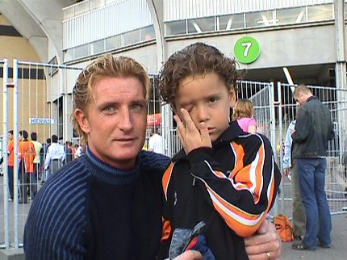
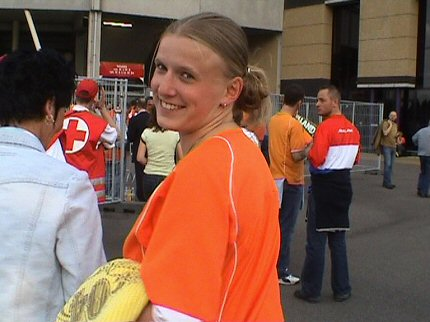
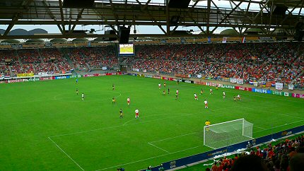
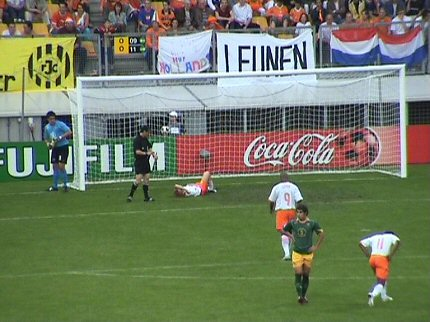
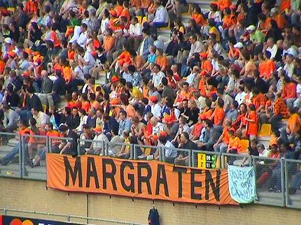
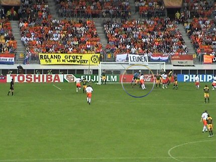
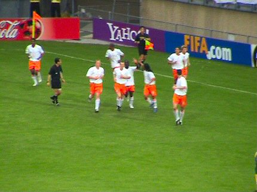
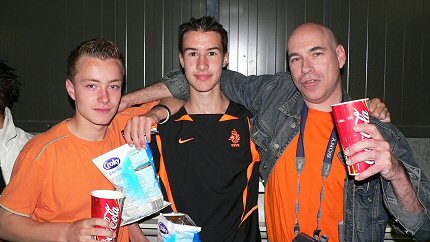
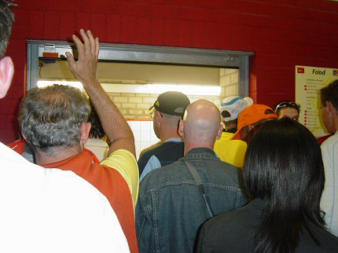
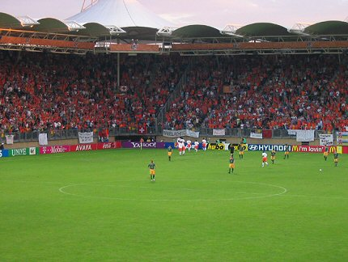

|
Australië - Nederland (U20) (3-0) 15 juni 2005 |
Australië
- Nederland (U20) (3-0) 15 juni 2005

Oud-Rodaspeler Arno Doomernik en zoon (undersix) gaan ook naar de
wedstrijd kijken.

Francien van Megen, speelster Nederlandse meisjesselectie.

Een blik vanuit de westtribune op het volle Parkstad Limburg
Stadion. Dit
is een "uitwedstrijd" voor het Nederlands elftal. Ze spelen derhalve in de
witte shirts.

Nadat Kruys van dichtbij tegen de lat heeft gekopt komt hij in
botsing met
een verdediger waarna hij geblesseerd ter aarde stort.

De vaste oranjeklanten uit Margraten.

Emanuelson bereikt met een hoekschop het hoofd van Maduro die de
bal
perfect inkopt: 0-1, (19').

Emanuelson vervangt de geblesseerde Afellay terwijl Collins John
speelt in
plaats van Vincken.

Bisschoppelijk College Roermond on tour.

Onderwijl wachtend op een bier......

....scoort Nederland 0-2, (46'). Een assist van Abeyie op
Emanuelson die
de bal door de benen van de Australische doelman schiet betekent het
1500ste doelpunt in de geschiedenis van het WK onder 20 jaar.
(foto-rip: w7daeikel)